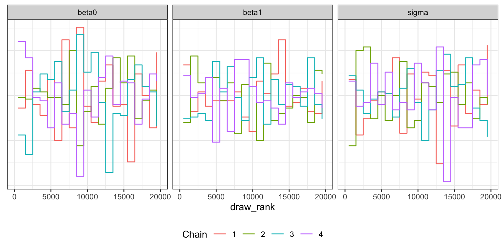
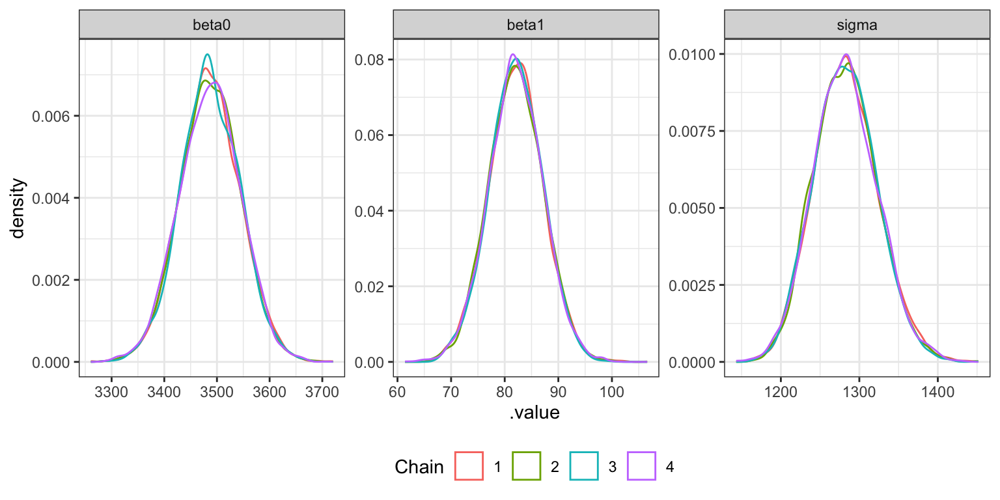
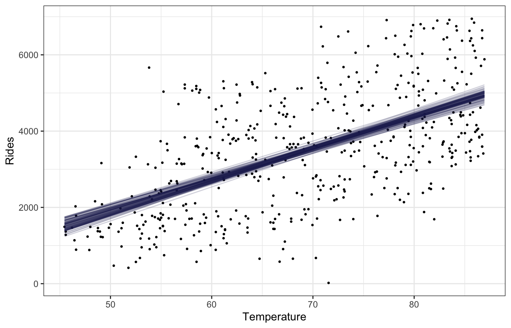
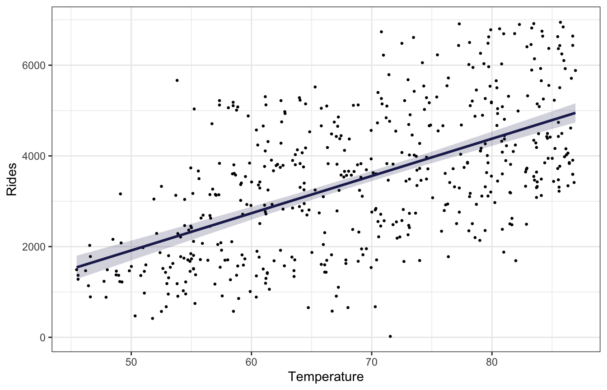
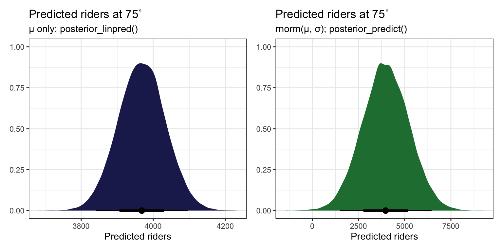

library(bayesrules)
library(tidyverse)
library(brms)
library(cmdstanr)
library(rstanarm)
library(broom.mixed)
library(tidybayes)
library(ggdist)
library(patchwork)
library(ggtext)
# Plot stuff
clrs <- MetBrewer::met.brewer("Lakota", 6)
theme_set(theme_bw())
# Seed stuff
set.seed(1234)
BAYES_SEED <- 1234
data(bikes, package = "bayesrules")
bikes <- bikes |>
mutate(temp_feel_centered = scale(temp_feel, scale = FALSE),
temp_feel_c = as.numeric(temp_feel_centered))
temp_details <- attributes(bikes$temp_feel_centered) %>%
set_names(janitor::make_clean_names(names(.)))Reading notes
Simple normal regression
9.2: Tuning prior models for regression parameters
We want to estimate the effect of temperature on bike share ridership. We need to estimate three parameters:
- \(\beta_0\), or the intercept. From prior research, we know:
On an average temperature day, say 65 or 70 degrees for D.C., there are typically around 5000 riders, though this average could be somewhere between 3000 and 7000.
- \(\beta_1\), or the slope. From prior research, we know:
For every one degree increase in temperature, ridership typically increases by 100 rides, though this average increase could be as low as 20 or as high as 180.
- \(\sigma\), or the variation in ridership. From prior research, we know:
At any given temperature, daily ridership will tend to vary with a moderate standard deviation of 1250 rides.
The intercept there is centered at 5000 riders.
That gives us these priors:
p1 <- ggplot() +
geom_function(fun = ~dnorm(., 5000, 1000), size = 1, color = clrs[1]) +
xlim(c(1000, 9000)) +
labs(x = "**β<sub>0c</sub>**<br>Average daily ridership, centered") +
theme(axis.title.x = element_markdown())
p2 <- ggplot() +
geom_function(fun = ~dnorm(., 100, 40), size = 1, color = clrs[3]) +
xlim(c(-50, 250)) +
labs(x = "**β<sub>1</sub>**<br>Effect of temperature on ridership") +
theme(axis.title.x = element_markdown())
p3 <- ggplot() +
geom_function(fun = ~dexp(., 1 / 1250), size = 1, color = clrs[4]) +
xlim(c(0, 7000)) +
labs(x = "**σ**<br>Variation in daily ridership") +
theme(axis.title.x = element_markdown())
p1 | p2 | p3More formally, we can write out the whole model like this:
\[ \begin{aligned} Y_i &\sim \mathcal{N}(\mu_i, \sigma) \text{, or} & \text{[McElreath's syntax]} \\ Y_i \mid \beta_0, \beta_1, \sigma &\stackrel{\text{ind}}{\sim} \mathcal{N}(\mu_i, \sigma^2) & \text{[Bayes Rules!'s syntax]} \\ \mu_i &= \beta_{0c} + \beta_1 X_i \\ \\ \beta_{0c} &\sim \mathcal{N}(5000, 1000) \\ \beta_{1} &\sim \mathcal{N}(100, 40) \\ \sigma &\sim \operatorname{Exponential}(1 / 1250) \end{aligned} \]
We can simulate from all these priors to see how reasonable they are, McElreath-style. In Bayes Rules! they show a picture of this but not the code to make it. I’ll use brms bc it’s easy.
priors <- c(prior(normal(5000, 1000), class = Intercept),
prior(normal(100, 40), class = b, coef = "temp_feel_c"),
prior(exponential(0.0008), class = sigma))
bike_prior_only <- brm(
bf(rides ~ temp_feel_c),
data = bikes,
family = gaussian(),
prior = priors,
sample_prior = "only",
backend = "cmdstanr", cores = 4, seed = BAYES_SEED, refresh = 0
)
## Start samplingThese lines all look reasonable, yay.
draws_prior <- tibble(temp_feel_c = seq(45 - temp_details$scaled_center,
90 - temp_details$scaled_center,
1)) |>
add_epred_draws(bike_prior_only, ndraws = 200) |>
mutate(unscaled = temp_feel_c + temp_details$scaled_center)
draws_prior |>
ggplot(aes(x = unscaled, y = .epred)) +
geom_line(aes(group = .draw), alpha = 0.2) +
labs(x = "Temperature", y = "Number of rides")9.3: Posterior simulation
Run the model
bike_rstanarm <- stan_glm(
rides ~ temp_feel_c,
data = bikes,
family = gaussian(),
prior_intercept = normal(5000, 1000),
prior = normal(100, 40),
prior_aux = exponential(0.0008),
chains = 4, iter = 5000*2, seed = 84735, refresh = 0
)priors <- c(prior(normal(5000, 1000), class = Intercept),
prior(normal(100, 40), class = b, coef = "temp_feel_c"),
prior(exponential(0.0008), class = sigma))
bike_brms <- brm(
bf(rides ~ temp_feel_c),
data = bikes,
family = gaussian(),
prior = priors,
chains = 4, iter = 5000*2, seed = BAYES_SEED,
backend = "cmdstanr", refresh = 0
)
## Start sampling09-stan/bike-simple.stan
data {
int<lower = 0> n;
vector[n] Y;
vector[n] X;
}
/*
// We could also center things here and then use it in mu below:
// mu = beta0 + beta1 * X_centered;
// See https://mc-stan.org/docs/stan-users-guide/standardizing-predictors-and-outputs.html
transformed data {
vector[n] X_centered;
X_centered = X - mean(X);
}
*/
parameters {
real beta0;
real beta1;
real<lower = 0> sigma;
}
transformed parameters {
vector[n] mu;
mu = beta0 + beta1 * X;
}
model {
Y ~ normal(mu, sigma);
beta0 ~ normal(5000, 1000);
beta1 ~ normal(100, 40);
sigma ~ exponential(0.0008);
}
generated quantities {
vector[n] Y_rep;
for (i in 1:n) {
Y_rep[i] = normal_rng(mu[i], sigma);
}
}bike_stan <- cmdstan_model("09-stan/bike-simple.stan")bike_stan_samples <- bike_stan$sample(
data = list(n = nrow(bikes), Y = bikes$rides, X = bikes$temp_feel_c),
parallel_chains = 4, iter_warmup = 5000, iter_sampling = 5000,
refresh = 0, seed = BAYES_SEED
)
## Running MCMC with 4 parallel chains...
##
## Chain 3 finished in 2.0 seconds.
## Chain 4 finished in 2.0 seconds.
## Chain 1 finished in 2.0 seconds.
## Chain 2 finished in 2.0 seconds.
##
## All 4 chains finished successfully.
## Mean chain execution time: 2.0 seconds.
## Total execution time: 2.1 seconds.Diagnostics
Effective sample size and R-hat
neff_ratio(bike_rstanarm)
## (Intercept) temp_feel_c sigma
## 0.96345 0.96075 0.96825
rhat(bike_rstanarm)
## (Intercept) temp_feel_c sigma
## 0.9998765 0.9999727 1.0000086Trace plots
bike_rstanarm |>
gather_draws(`(Intercept)`, temp_feel_c, sigma) |>
ungroup() |>
mutate(.variable = fct_relevel(factor(.variable), c("(Intercept)", "temp_feel_c", "sigma"))) |>
ggplot(aes(x = .iteration, y = .value, color = as.factor(.chain))) +
geom_line(size = 0.05) +
labs(color = "Chain") +
facet_wrap(vars(.variable), scales = "free_y") +
theme(legend.position = "bottom")Trank plots
bike_rstanarm |>
gather_draws(`(Intercept)`, temp_feel_c, sigma) |>
ungroup() |>
mutate(.variable = fct_relevel(factor(.variable), c("(Intercept)", "temp_feel_c", "sigma"))) |>
group_by(.variable) |>
mutate(draw_rank = rank(.value)) |>
ggplot(aes(x = draw_rank)) +
stat_bin(aes(color = factor(.chain)), geom = "step", binwidth = 1000,
position = position_identity(), boundary = 0) +
labs(color = "Chain") +
facet_wrap(vars(.variable)) +
theme(legend.position = "bottom",
axis.text.y = element_blank(), axis.title.y = element_blank(), axis.ticks.y = element_blank())Density plots
bike_rstanarm |>
gather_draws(`(Intercept)`, temp_feel_c, sigma) |>
ungroup() |>
mutate(.variable = fct_relevel(factor(.variable), c("(Intercept)", "temp_feel_c", "sigma"))) |>
ggplot(aes(x = .value, color = factor(.chain))) +
geom_density() +
labs(color = "Chain") +
facet_wrap(vars(.variable), scales = "free") +
theme(legend.position = "bottom")Effective sample size and R-hat
neff_ratio(bike_brms)
## b_Intercept b_temp_feel_c sigma Intercept lprior
## 1.0579051 1.0534749 1.1040274 1.0579051 1.0473025
## lp__
## 0.4827253
rhat(bike_brms)
## b_Intercept b_temp_feel_c sigma Intercept lprior
## 1.000021 1.000172 1.000024 1.000021 1.000135
## lp__
## 1.000185Trace plots
bike_brms |>
gather_draws(b_Intercept, b_temp_feel_c, sigma) |>
ggplot(aes(x = .iteration, y = .value, color = as.factor(.chain))) +
geom_line(size = 0.05) +
labs(color = "Chain") +
facet_wrap(vars(.variable), scales = "free_y") +
theme(legend.position = "bottom")Trank plots
bike_brms |>
gather_draws(b_Intercept, b_temp_feel_c, sigma) |>
group_by(.variable) |>
mutate(draw_rank = rank(.value)) |>
ggplot(aes(x = draw_rank)) +
stat_bin(aes(color = factor(.chain)), geom = "step", binwidth = 1000,
position = position_identity(), boundary = 0) +
labs(color = "Chain") +
facet_wrap(vars(.variable)) +
theme(legend.position = "bottom",
axis.text.y = element_blank(), axis.title.y = element_blank(), axis.ticks.y = element_blank())Density plots
bike_brms |>
gather_draws(b_Intercept, b_temp_feel_c, sigma) |>
ggplot(aes(x = .value, color = factor(.chain))) +
geom_density() +
labs(color = "Chain") +
facet_wrap(vars(.variable), scales = "free") +
theme(legend.position = "bottom")Effective sample size and R-hat
neff_ratio(bike_stan_samples, pars = c("beta0", "beta1", "sigma"))
## beta0 beta1 sigma
## 1.077305 1.012467 1.085847
rhat(bike_stan_samples, pars = c("beta0", "beta1", "sigma"))
## beta0 beta1 sigma
## 1.0001360 1.0000768 0.9999753Trace plots
bike_stan_samples |>
gather_draws(beta0, beta1, sigma) |>
ggplot(aes(x = .iteration, y = .value, color = as.factor(.chain))) +
geom_line(size = 0.05) +
labs(color = "Chain") +
facet_wrap(vars(.variable), scales = "free_y") +
theme(legend.position = "bottom")Trank plots
bike_stan_samples |>
gather_draws(beta0, beta1, sigma) |>
group_by(.variable) |>
mutate(draw_rank = rank(.value)) |>
ggplot(aes(x = draw_rank)) +
stat_bin(aes(color = factor(.chain)), geom = "step", binwidth = 1000,
position = position_identity(), boundary = 0) +
labs(color = "Chain") +
facet_wrap(vars(.variable)) +
theme(legend.position = "bottom",
axis.text.y = element_blank(), axis.title.y = element_blank(), axis.ticks.y = element_blank())
Density plots
bike_stan_samples |>
gather_draws(beta0, beta1, sigma) |>
ggplot(aes(x = .value, color = factor(.chain))) +
geom_density() +
labs(color = "Chain") +
facet_wrap(vars(.variable), scales = "free") +
theme(legend.position = "bottom")
9.4: Interpreting the posterior
Parameter summaries
tidy(bike_rstanarm, effects = c("fixed", "aux"),
conf.int = TRUE, conf.level = 0.8)
## # A tibble: 4 × 5
## term estimate std.error conf.low conf.high
## <chr> <dbl> <dbl> <dbl> <dbl>
## 1 (Intercept) 3487. 58.0 3413. 3561.
## 2 temp_feel_c 82.2 5.08 75.7 88.7
## 3 sigma 1282. 40.9 1231. 1336.
## 4 mean_PPD 3487. 82.0 3382. 3593.bike_rstanarm |>
gather_draws(`(Intercept)`, temp_feel_c, sigma) |>
ungroup() |>
mutate(.variable = fct_relevel(factor(.variable), c("(Intercept)", "temp_feel_c", "sigma"))) |>
ggplot(aes(x = .value, fill = .variable)) +
stat_halfeye(normalize = "xy") +
scale_fill_manual(values = c(clrs[1], clrs[3], clrs[4]), guide = "none") +
facet_wrap(vars(.variable), scales = "free_x") +
labs(x = "Parameter posterior") +
theme(legend.position = "bottom")tidy(bike_brms, conf.int = TRUE, conf.level = 0.8) |>
select(-c(effect, component, group))
## # A tibble: 3 × 5
## term estimate std.error conf.low conf.high
## <chr> <dbl> <dbl> <dbl> <dbl>
## 1 (Intercept) 3487. 57.5 3414. 3561.
## 2 temp_feel_c 82.1 5.08 75.6 88.6
## 3 sd__Observation 1283. 40.3 1232. 1336.bike_brms |>
gather_draws(b_Intercept, b_temp_feel_c, sigma) |>
ggplot(aes(x = .value, fill = .variable)) +
stat_halfeye(normalize = "xy") +
scale_fill_manual(values = c(clrs[1], clrs[3], clrs[4]), guide = "none") +
facet_wrap(vars(.variable), scales = "free_x") +
labs(x = "Parameter posterior") +
theme(legend.position = "bottom")bike_stan_samples$print(variables = c("beta0", "beta1", "sigma"),
"mean", "median", "sd", ~quantile(.x, probs = c(0.1, 0.9)))
## variable mean median sd 10% 90%
## beta0 3487.16 3486.85 57.13 3414.32 3560.02
## beta1 82.12 82.10 5.06 75.68 88.58
## sigma 1282.72 1281.84 40.44 1231.39 1335.31bike_stan_samples |>
gather_draws(beta0, beta1, sigma) |>
ggplot(aes(x = .value, fill = .variable)) +
stat_halfeye(normalize = "xy") +
scale_fill_manual(values = c(clrs[1], clrs[3], clrs[4]), guide = "none") +
facet_wrap(vars(.variable), scales = "free_x") +
labs(x = "Parameter posterior") +
theme(legend.position = "bottom")
Fitted draws
bikes |>
add_linpred_draws(bike_rstanarm, ndraws = 100) |>
ggplot(aes(x = temp_feel, y = rides)) +
geom_point(data = bikes, size = 0.5) +
geom_line(aes(y = .linpred, group = .draw), alpha = 0.2, size = 0.5, color = clrs[6]) +
labs(x = "Temperature", y = "Rides")
bikes |>
add_linpred_draws(bike_brms, ndraws = 100) |>
ggplot(aes(x = temp_feel, y = rides)) +
geom_point(data = bikes, size = 0.5) +
geom_line(aes(y = .linpred, group = .draw), alpha = 0.2, size = 0.5, color = clrs[6]) +
labs(x = "Temperature", y = "Rides")
bike_stan_samples |>
spread_draws(mu[i]) |>
mean_qi() |>
bind_cols(bikes) |>
ggplot(aes(x = temp_feel, y = rides)) +
geom_point(size = 0.5) +
geom_line(aes(y = mu), color = clrs[6], size = 1) +
geom_ribbon(aes(ymin = .lower, ymax = .upper), fill = clrs[6], alpha = 0.2) +
labs(x = "Temperature", y = "Rides")
There’s no easy way to replicate add_linpred_draws(..., ndraws = BLAH) with raw Stan like this without running the model again and generating a bunch of simulated mus based on some variable like n_sim that we build into the Stan model, but we can use the original 500 rows of data and use geom_lineribbon() instead of a spaghetti plot.
Is β1 > 0?
Easily.
bike_rstanarm |>
spread_draws(temp_feel_c) |>
count(temp_feel_c > 0) |>
mutate(prob = n / sum(n))
## # A tibble: 1 × 3
## `temp_feel_c > 0` n prob
## <lgl> <int> <dbl>
## 1 TRUE 20000 1bike_brms |>
spread_draws(b_temp_feel_c) |>
count(b_temp_feel_c > 0) |>
mutate(prob = n / sum(n))
## # A tibble: 1 × 3
## `b_temp_feel_c > 0` n prob
## <lgl> <int> <dbl>
## 1 TRUE 20000 1bike_stan_samples |>
spread_draws(beta1) |>
count(beta1 > 0) |>
mutate(prob = n / sum(n))
## # A tibble: 1 × 3
## `beta1 > 0` n prob
## <lgl> <int> <dbl>
## 1 TRUE 20000 19.5: Posterior prediction
We could plug in some temperature, like 75, and get a predicted count of riders (values from the rstanarm model):
values_rstanarm <- bike_rstanarm |>
tidy() |>
split(~term)
b0 <- values_rstanarm$`(Intercept)`$estimate
b1 <- values_rstanarm$temp_feel_c$estimate
temp_mean <- temp_details$scaled_center
b0 + (b1 * (75 - temp_mean))
## [1] 3968.317But this ignores two types of uncertainty:
- Sampling variability in the data, or in \(Y\)
- Posterior variability in parameters, or in \(\beta_0\), \(\beta_1\), and \(\sigma\)
p1 <- bike_rstanarm |>
linpred_draws(newdata = tibble(temp_feel_c = (75 - temp_mean))) |>
ggplot(aes(x = .linpred)) +
stat_halfeye(fill = clrs[6]) +
labs(title = "Predicted riders at 75˚",
subtitle = "µ only; posterior_linpred()",
x = "Predicted riders", y = NULL)
p2 <- bike_rstanarm |>
predicted_draws(newdata = tibble(temp_feel_c = (75 - temp_mean))) |>
ggplot(aes(x = .prediction)) +
stat_halfeye(fill = clrs[5]) +
labs(title = "Predicted riders at 75˚",
subtitle = "rnorm(µ, σ); posterior_predict()",
x = "Predicted riders", y = NULL)
p1 | p2
p1 <- bike_brms |>
linpred_draws(newdata = tibble(temp_feel_c = (75 - temp_mean))) |>
ggplot(aes(x = .linpred)) +
stat_halfeye(fill = clrs[6]) +
labs(title = "Predicted riders at 75˚",
subtitle = "µ only; posterior_linpred()",
x = "Predicted riders", y = NULL)
p2 <- bike_brms |>
predicted_draws(newdata = tibble(temp_feel_c = (75 - temp_mean))) |>
ggplot(aes(x = .prediction)) +
stat_halfeye(fill = clrs[5]) +
labs(title = "Predicted riders at 75˚",
subtitle = "rnorm(µ, σ); posterior_predict()",
x = "Predicted riders", y = NULL)
p1 | p2AHH SO THIS IS HOW YOU DO newdata = WHATEVER WITH RAW STAN. Build mu (posterior_linpred()) on your own with the coefficients from each draw, then use that mu in rnorm() (posterior_predict()). You can then get the expectation of the posterior (posterior_epred()) by taking the average of that.
predict_75 <- bike_stan_samples |>
spread_draws(beta0, beta1, sigma) |>
mutate(mu = beta0 + (beta1 * (75 - temp_mean)), # like posterior_linpred()
y_new = rnorm(n(), mean = mu, sd = sigma)) # like posterior_predict()
p1 <- predict_75 |>
ggplot(aes(x = mu)) +
stat_halfeye(fill = clrs[6]) +
labs(title = "Predicted riders at 75˚",
subtitle = "µ only; like posterior_linpred()",
x = "Predicted riders", y = NULL)
p2 <- predict_75 |>
ggplot(aes(x = y_new)) +
stat_halfeye(fill = clrs[5]) +
labs(title = "Predicted riders at 75˚",
subtitle = "rnorm(µ, σ); like posterior_predict()",
x = "Predicted riders", y = NULL)
p1 | p2
predict_75 |>
summarize(epred = mean(y_new))
## # A tibble: 1 × 1
## epred
## <dbl>
## 1 3968.9.6: Sequential regression modeling
Bayesianism is all about updating. What does this relationship between temperature and ridership as data is slowly collected, like after 30 days, 60 days, and 500 days? How does the posterior evolve and settle?
I’ll do this just with brms:
priors <- c(prior(normal(5000, 1000), class = Intercept),
prior(normal(100, 40), class = b, coef = "temp_feel_c"),
prior(exponential(0.0008), class = sigma))
bike_phases <- tribble(
~phase, ~data,
1, slice(bikes, 1:30),
2, slice(bikes, 1:60),
3, bikes
) |>
mutate(model = map(data, ~{
brm(
bf(rides ~ temp_feel_c),
data = .,
family = gaussian(),
prior = priors,
chains = 4, iter = 5000*2, seed = BAYES_SEED,
backend = "cmdstanr", refresh = 0
)})
)
## Start sampling
## Start sampling
## Start samplingbike_phase_draws <- bike_phases |>
mutate(draws = map(model, ~spread_draws(., b_temp_feel_c)))
phases_coefs <- bike_phase_draws |>
mutate(coef_plot = map2(draws, phase, ~{
ggplot(.x, aes(x = b_temp_feel_c)) +
stat_halfeye(fill = clrs[3]) +
coord_cartesian(xlim = c(-10, 100)) +
labs(title = paste("Phase", .y))
}))
wrap_plots(phases_coefs$coef_plot)bike_phase_preds <- bike_phases |>
mutate(preds = map2(data, model, ~{
.x |>
add_linpred_draws(.y, ndraws = 50) |>
ungroup()
}))
phases_preds <- bike_phase_preds |>
mutate(pred_plot = pmap(list(data, preds, phase), ~{
ggplot(..2, aes(x = temp_feel, y = rides)) +
geom_point(data = ..1, size = 0.5) +
geom_line(aes(y = .linpred, group = .draw),
alpha = 0.2, size = 0.5, color = clrs[6]) +
labs(title = paste("Phase", ..3)) +
coord_cartesian(xlim = c(40, 90), ylim = c(0, 7000))
}))
wrap_plots(phases_preds$pred_plot)